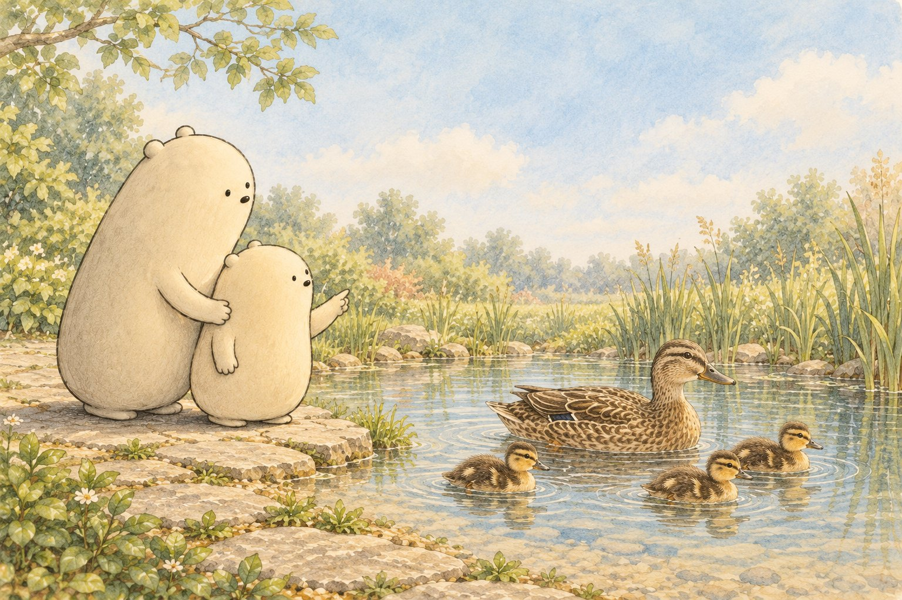
Read aloud together
Quack. Paddle. Swish. (Move your hands like gentle paddles.) Big Wonderer and Little Wonderer stand together on a dry path beside a shallow pond. A duck family glides past.
A duck's feathers overlap like tiny roof tiles. They make a smooth coat around the duck's body.
Ask: Can you point to the feathers along the duck's back?
The duck reaches its bill toward a special oil near its tail. Then it smooths the oil over its feathers. Brush, brush, brush.
Water beads up and rolls away. Air held among the feathers helps the duck stay warm and buoyant while the water supports its body.
Under the water, wide webbed feet press backward. The duck's body moves forward.
Ask: Can your hands open wide like webbed feet?
The duck family tucks close near the reeds. Big Wonderer and Little Wonderer watch quietly from the path.
Tonight, step by step
- Read the story aloud together and stop at each “Ask”.
- Print the pack and pick two or three pages; there is no need to do them all.
- Point, circle, trace and color. Snip only with a grown-up.
- Fold the picture book and read it again at bedtime.
Inside the printout
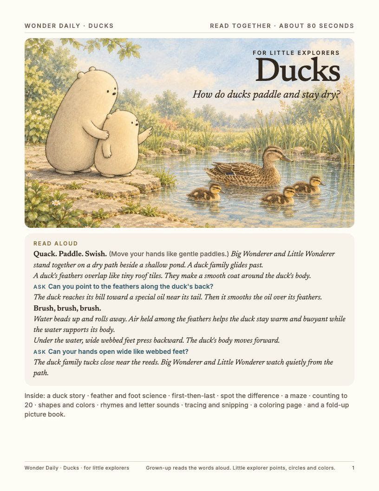
1. Cover and read-aloud 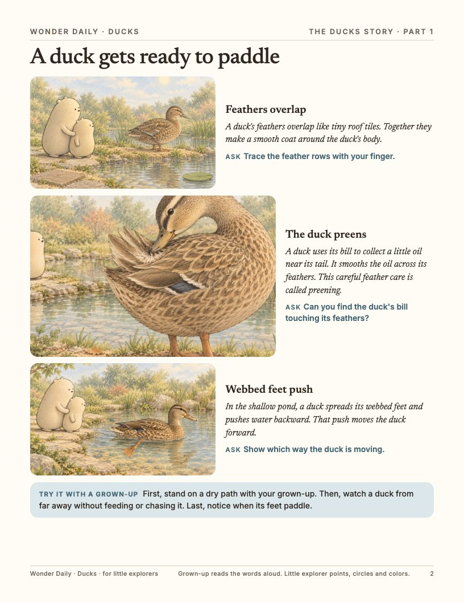
2. The story 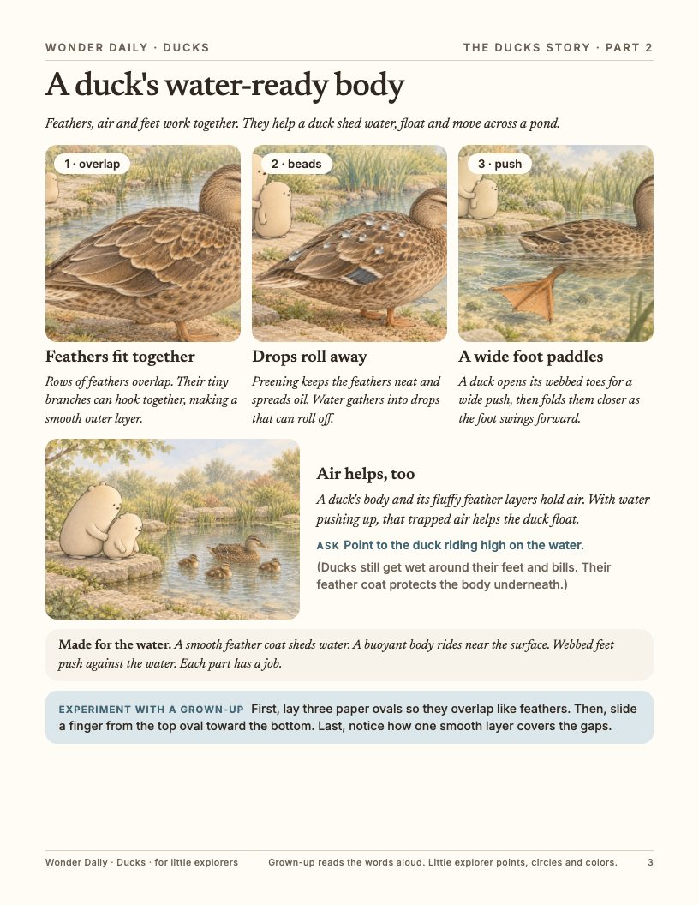
3. Science and an experiment 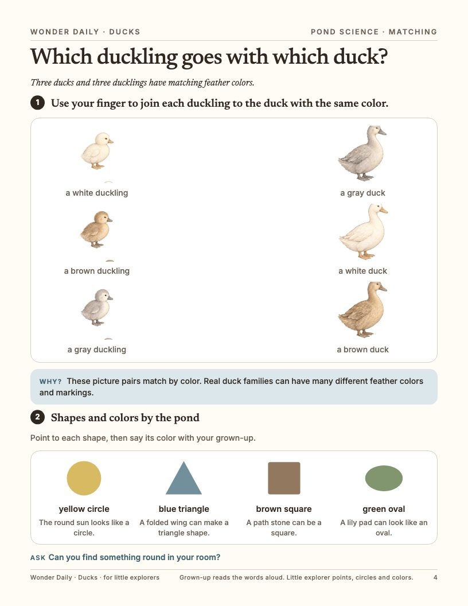
4. Matching, shapes and colors 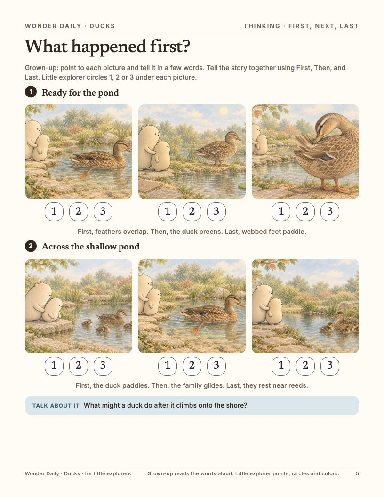
5. First, next, last 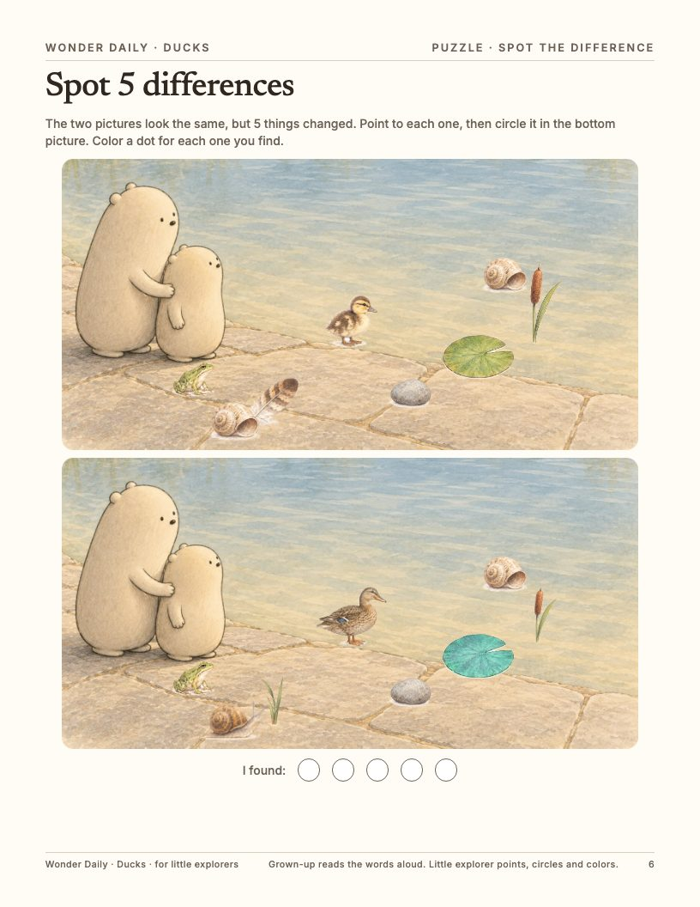
6. Spot the difference 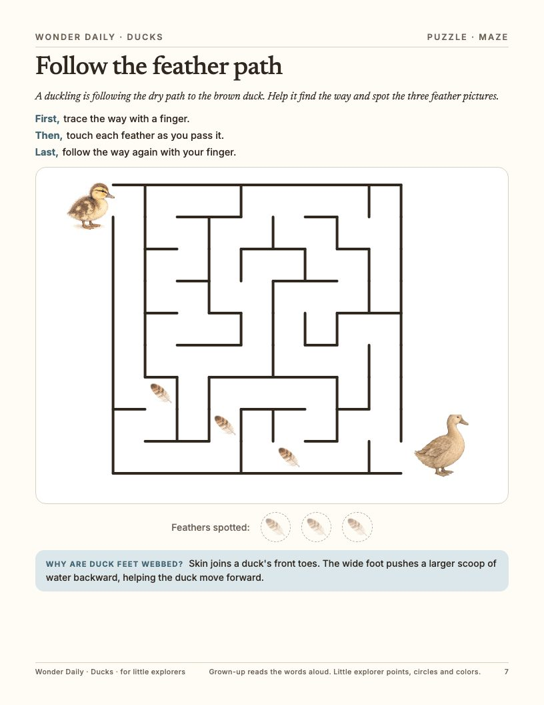
7. Maze 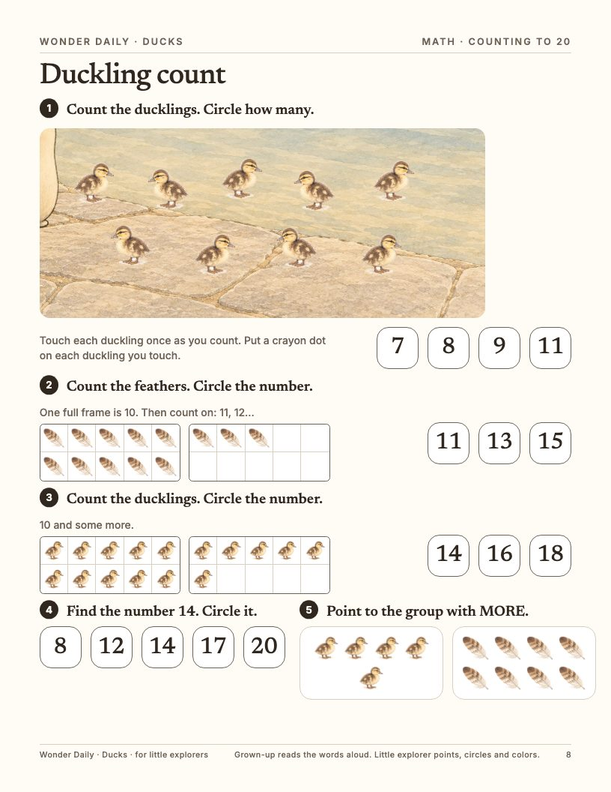
8. Counting to 20 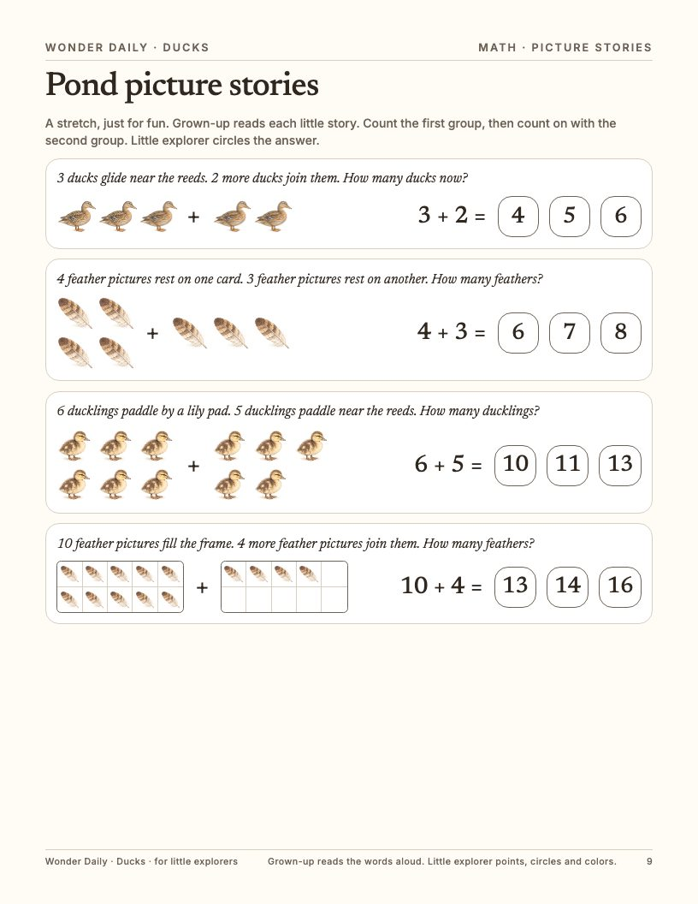
9. Picture stories 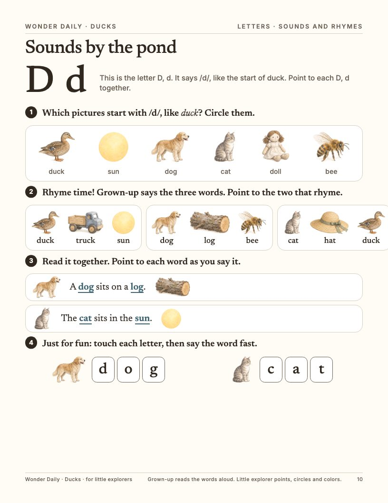
10. Sounds and rhymes 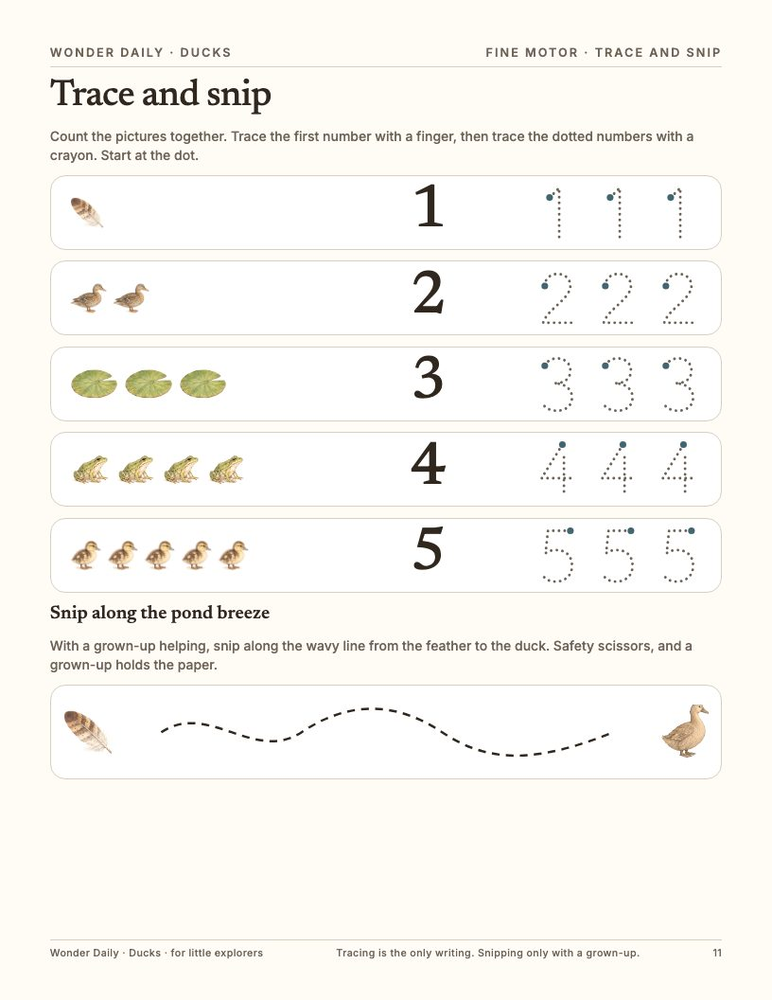
11. Trace and snip 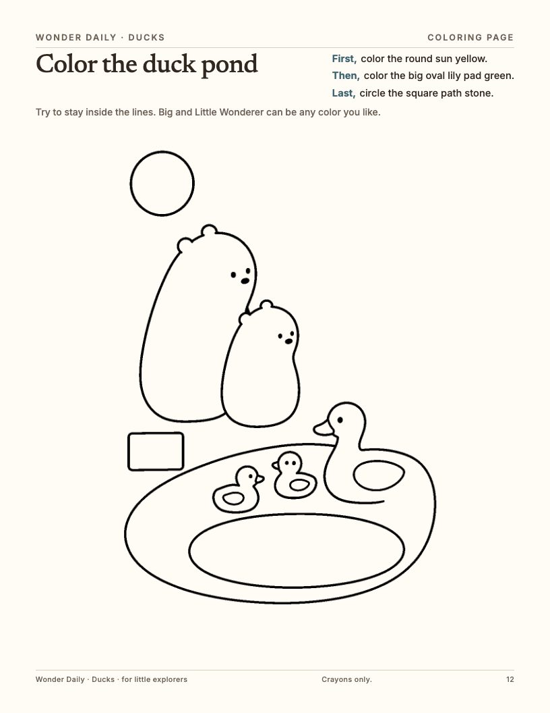
12. Coloring page